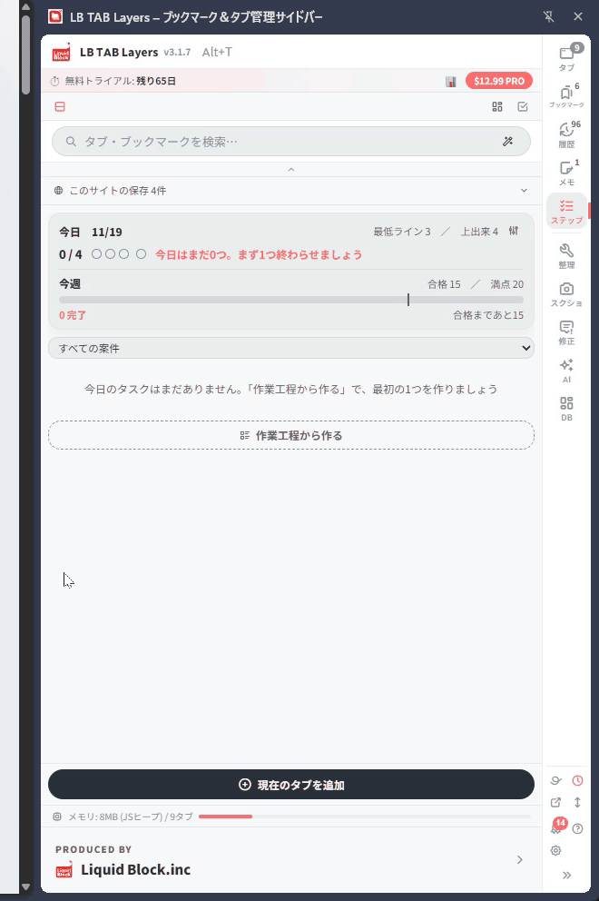
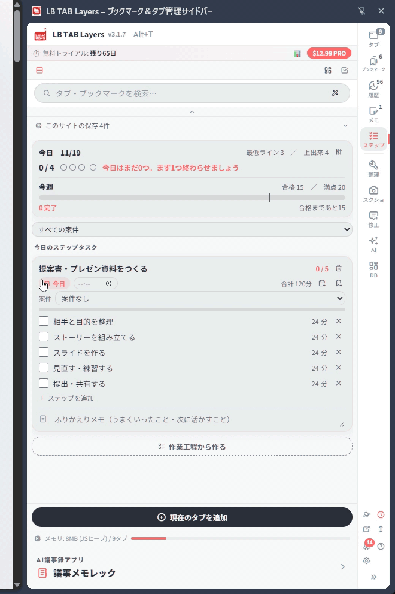
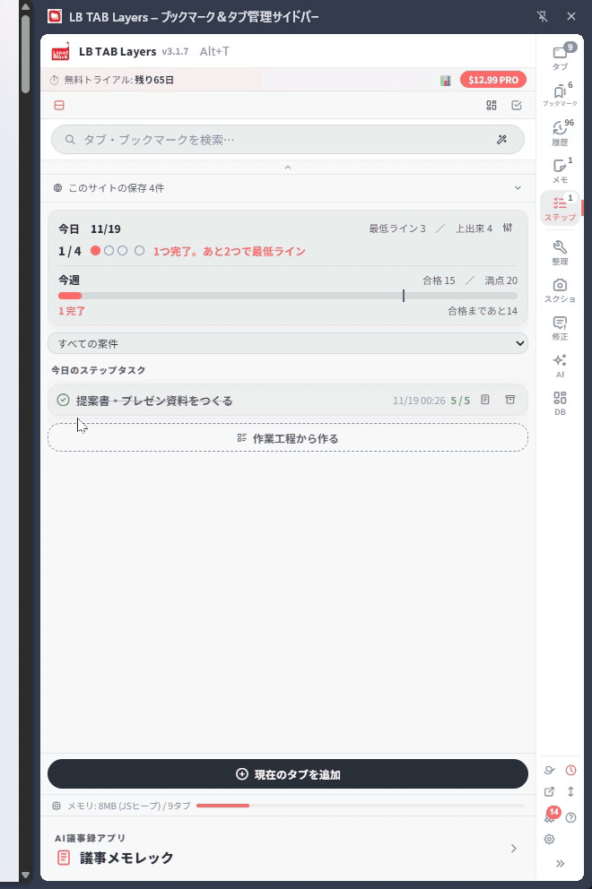
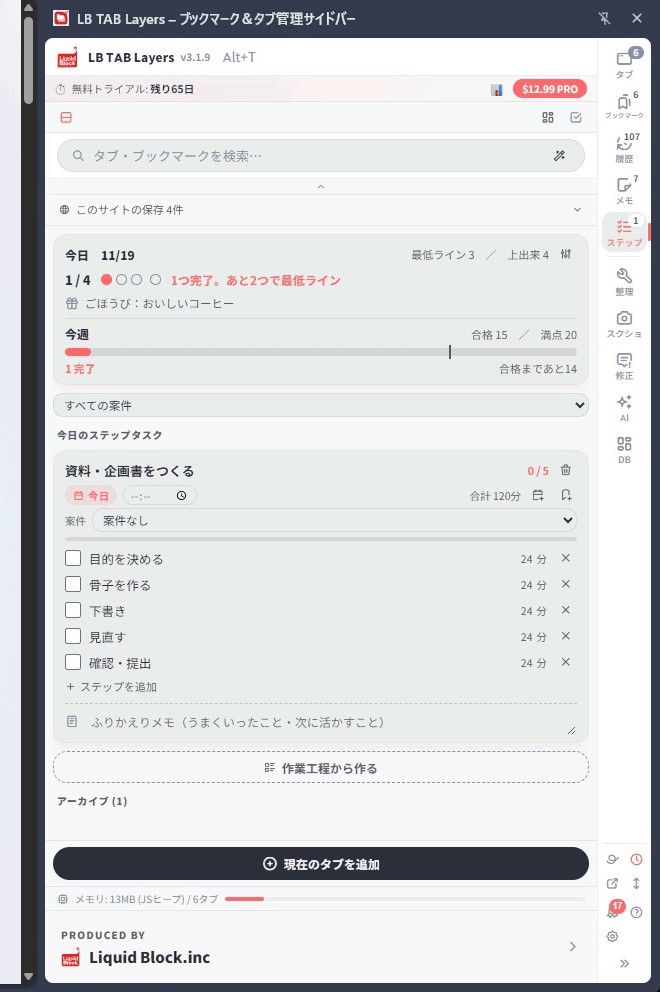
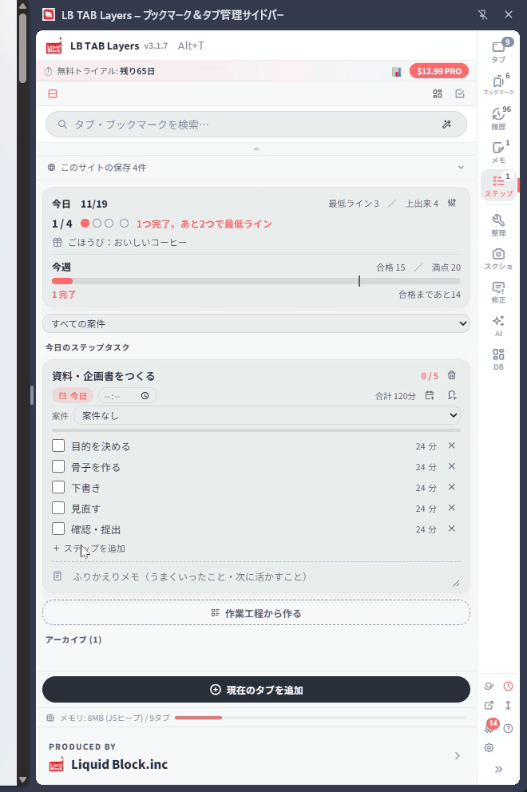
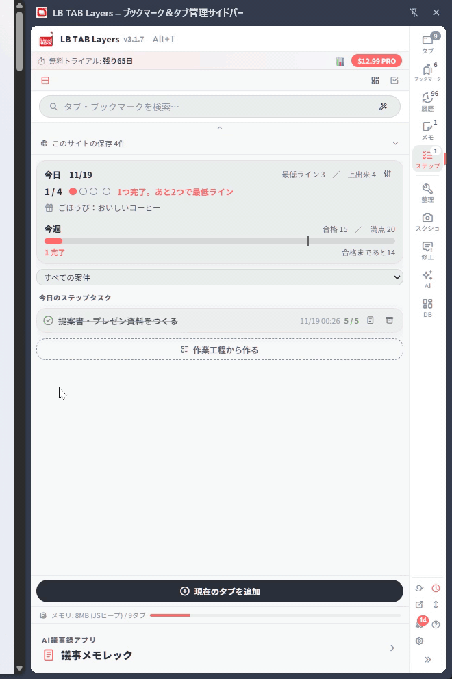
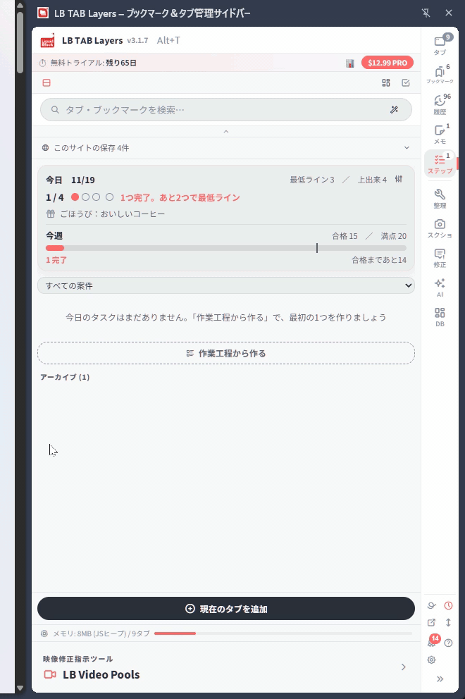
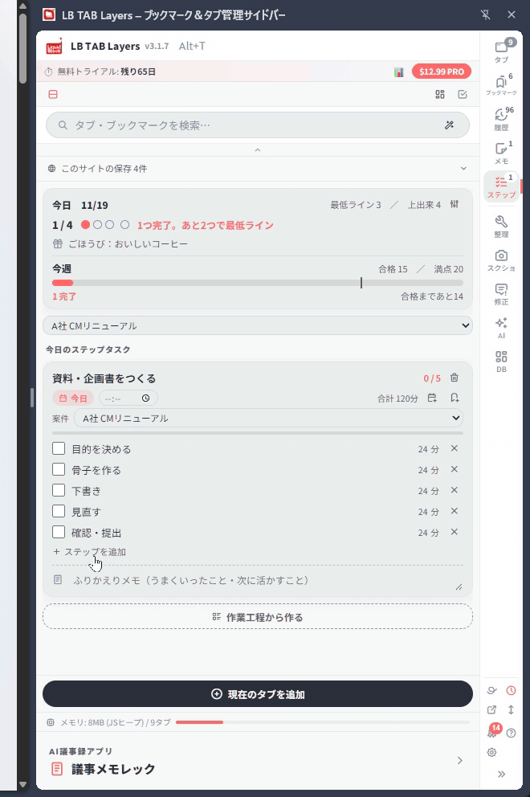

ひな形から作る PRO
仕事の種類（10 分類・34 種）を選ぶと、手順が並んだタスクができる
場所：「ステップ」›「作業工程から作る」
「ステップ」の画面の「作業工程から作る」で、10 の分類・34 種のひな形から選んで、タスクを作ります。作る前に、ステップの数・目安の時間・やる日・案件（グループ）を決められます。

仕事の種類（10 分類・34 種）を選ぶと、手順が並んだタスクができる
場所：「ステップ」›「作業工程から作る」
「ステップ」の画面の「作業工程から作る」で、10 の分類・34 種のひな形から選んで、タスクを作ります。作る前に、ステップの数・目安の時間・やる日・案件（グループ）を決められます。

1 つずつチェックする。全部終わると、1 タスク完了。お祝いが出る
場所：タスクのカード
ステップの左のチェックを入れて進めます。全部のステップにチェックが入ると、そのタスクが完了します。上の「今日」「今週」に、完了した数が出ます。

1 日・1 週間の目標の数と、自分へのごほうびを決める
場所：歯車
歯車で、1 日と 1 週間の目標の数と、目標に届いたときの自分へのごほうびを決めます。ごほうびは、上のまとめと、お祝いに出ます。

やる日を決める。今日・持ち越し・日付なしに分かれる
場所：カードの日付
カードの日付で、やる日を決めます。今日・持ち越し・日付なし／これから、に分かれて並びます。日付を決めると、開始の時刻も入れられます。

タスクをグループに付ける。グループでしぼる
場所：カード／上のしぼり込み
タスクを、グループ（案件）に付けられます。上のしぼり込みで、案件ごとに見られます。タブの画面のグループの見出しにも、残りのタスクの数が出ます。

タスクごとのメモ。先週の数のまとめ
場所：カード／上のカード
タスクごとに、ふりかえりのメモを残せます。上のカードには、先週こなした数のまとめが出ます。PRO の機能です（お試し期間中は使えます）。
終わったタスクをしまう。Markdown・CSV で書き出す
場所：下のアーカイブ
完了したタスクは、アーカイブにしまえます。アーカイブは、完了した日ごとに並び、Markdown・CSV で書き出せます。


自分の手順を、ひな形として保存・書き出し・読み込み
場所：カード／ひな形の画面
今のタスクの手順を、自分のひな形として保存できます。自分のひな形は、ファイルに書き出して、ほかのパソコンで読み込めます。

タスクを、カレンダーの予定の入力画面に渡す
場所：カードのカレンダー
カードのカレンダーのボタンを押すと、タスクの名前と日時が入った、Google カレンダーの予定の入力画面が開きます。保存するかどうかは、その画面で決められます。PRO の機能です（お試し期間中は使えます）。
LB TAB Layers は、Chrome に無料で追加できます。入れたら、Alt+T で、いつでも開けます。
Chrome に無料で追加